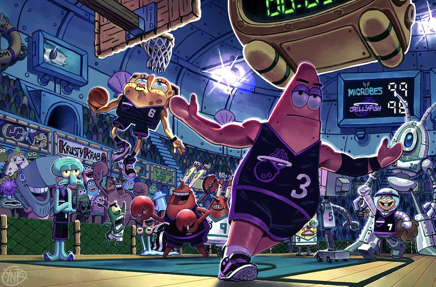

"The 4rd Explorer are a next generation indie post-nightcore bedroom-dreamgaze arena rock band making waves in the northeastern Cottage Farm Historic District scene. The 4rd Explorer has opened for bands such as iwrestledabearonce, sskrilecks, Nirvana, Telluryde. (shoutout Bejalvin) They are currently recording their 4rd “studio” “album,” “The 5st Exploration.” After releasing the RIAA certified, quadruple-Cobalt single “Our Song,” they began touring in prestigious venues such as EDC, Denny’s, my basement, First Avenue, Bryce’s basement, and Madison Square Garden."
“Mr. Meanor” (Pryda Snare)
Brain Johnson (Microphone)
John Timothy David Smithsonian (Pedals)
Joe (Oboe)
"After meeting in the Cottage Farm Historical District Advanced Technical Bowling League (the CFHDATBL), the members realized they had REAL talent, and quickly began using their penchant for earworms and fascinating melodies. After being endorsed by Richard D. James, they were given 10 Nillion dollars to fund their calling."
Hailing from rural Connecticut, Michael “Mister” Meanor, prides themselves on their deep and supple understanding of the cosmic meta. Having gone to Oxford University for a couple months before mysteriously disappearing, they were found by the Cottage Farm Historical District Advanced Technical Bowling League and quickly taken in for their talents. It is not known how they began their musicianship, but it is clear that the Pryda Snare became their true calling. Using incredibly complicated sound design and electronic performance techniques, “Mr. Meanor” puts on a show to be remembered.
Although it is unknown to this day Brain’s origins, his effect on the band is undeniable. Playing the microphone seems to be the easiest way for Brain to express his superior intellect. After being discovered lurking around the Cottage Farm Historical District Advanced Technical Bowling League, his pure brain power alone shocked the other members and blew them away with his perfect performance of “Stronger” by Kanye West. Through his superior mastery of the Microphone, Brain tests the sonic limits of what a Microphone can even do, contributing to the band's inspiring sound.
Coming from a hypothetical jazz background, John Timothy David Smithsonian brings a wide array of influences to the 4rd Explorer sound. Having played with a variety of groups such as The 3nd Explorer, Mega-Extreme-Hyper-Ear-Destroyer (needs citation), and Bruce Springsteen’s E Street Band, Smithsonian provides another layer of musicality to an already incredibly musical and complicated and serious and important and influential and good band.
Joe is the greatest musician of all time and has extensive experience playing the oboe for well over 3 months. He knew his destiny was to play oboe in the greatest most successful band of all time after realizing that oboe rhymes with Joe. After suffering at least 5 traumatic brain injuries he forgot his last name but he doesn’t care because it’s not important.
“Sounded really good (when they stopped playing)” - Jimmy’s mom
“We’re kinda like Queen” - Me
“I listened to them for an hour straight I think” - Steve Washington
